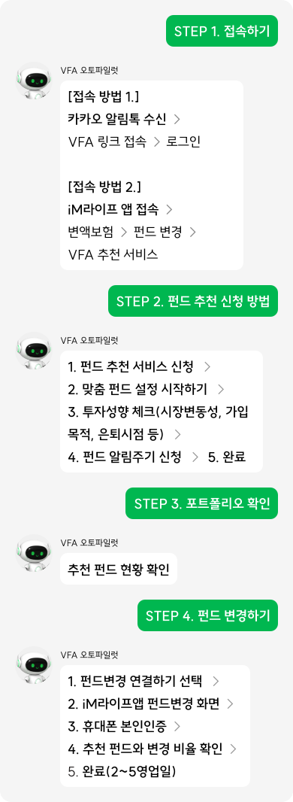

성공적인 은퇴라는 목적지까지, VFA와 함께 당신만의 든든한 여정을 시작해 볼까요?
아래 순서에 따라서 VFA × iM라이프 서비스를 시작해보세요.

자주 묻는 질문
지금 바로 변경해야 하나요?

추천 포트폴리오는 생성 시점 기준으로 산출됩니다. 최적의 결과를 위해 가급적 빠른 시일 내 변경하는 것을 권장합니다.
펀드변경 수수료가 있나요?
대부분의 변액보험은 펀드변경 수수료가 없거나 매우 낮은 수준입니다. 자세한 내용은 가입하신 보험사 약관을 확인해주세요.
VFA가 자동으로 펀드를 변경해주나요?
아니요. VFA는 투자자문 및 추천 정보를 제공하며, 실제 펀드변경은 고객님이 직접 보험사를 통해 진행해야 합니다.
리밸런싱 알림은 얼마나 자주 오나요?
30일, 60일, 90일 중 원하시는 주기를 직접 선택하실 수 있습니다. 기본값은 90일이며, 선택한 주기에 맞춰 카카오톡으로 안내해 드립니다.
VFA 시작하기